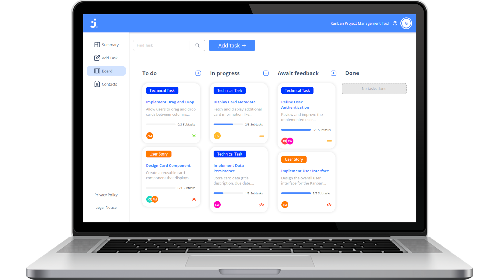

<div class="projectContainer">

    <div class="projectWrapper">

        <div class=projectImg data-aos="flip-up">
            
        </div>

        <div class="projectDescription" data-aos="fade-right">
            <h2>Join</h2>
            <h3>JavaScript | HTML | CSS</h3>
            <span>Task manager inspired by the Kanban System. Create and organize task using drag and drop functions,
                assign users and categories. This project was developed by group work.</span>
            <div class="projectButtons">
                <div class="liveTestButton">
                    Live test
                </div>
                <div class="githubButton">
                    Github
                </div>
            </div>
        </div>

    </div>


</div>